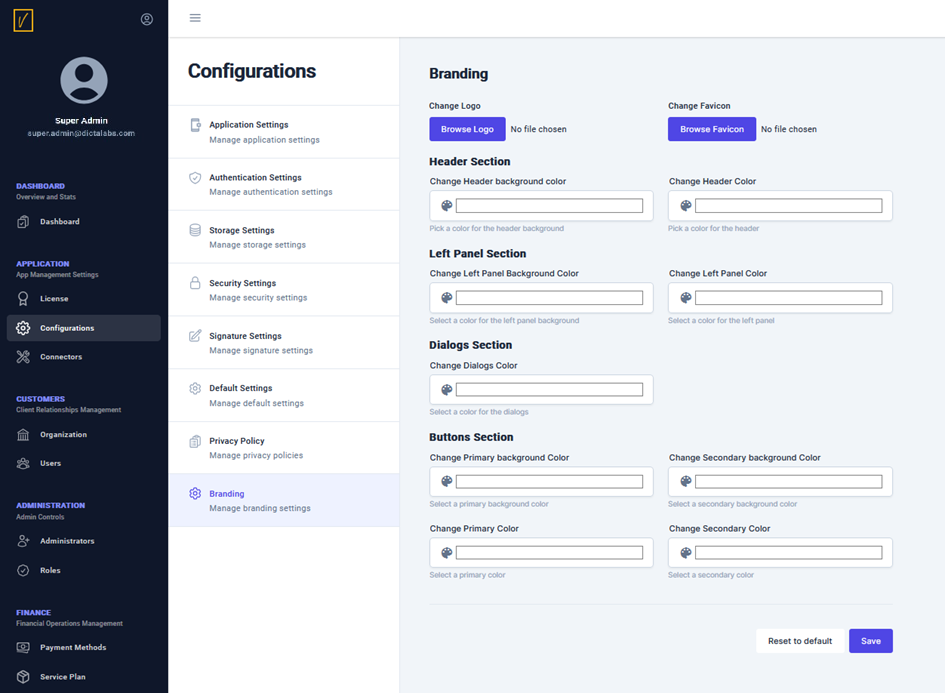

Branding
 vScrawl is a brandable application. In addition to the option to change the locale in the Application Settings, it is also possible to change the visual appearance.
You can update the Company Logo and Favicon with your own company's images. Additionally, the color scheme can be customized for the following sections:
- Header Section
- Left Panel Section
- Dialogs Section
- Buttons Section